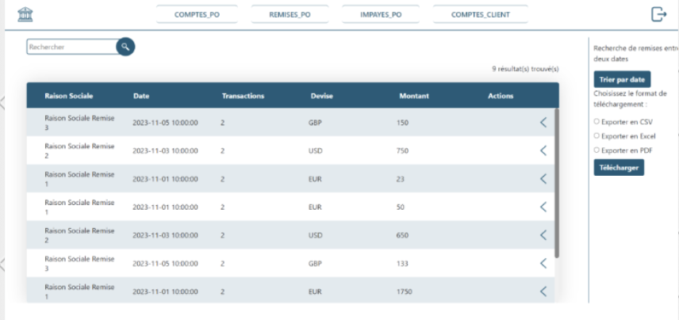
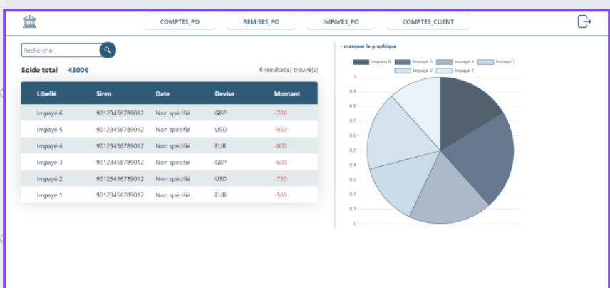
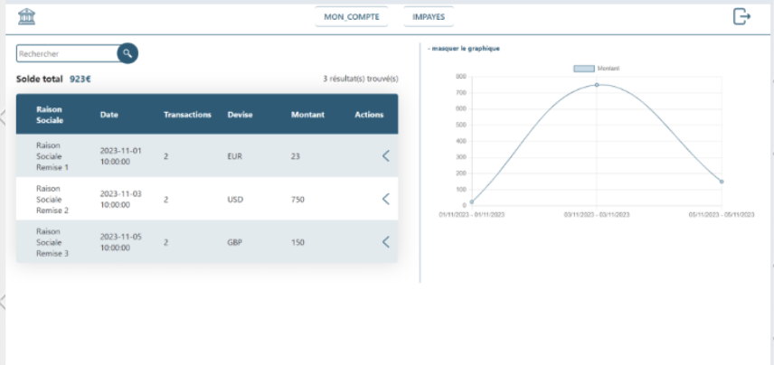

Projet développé en équipe sur Laravel, utilisant la méthode Scrum pour optimiser la gestion des paiements au sein d'une banque.
Nous avons identifié et analysé les processus de paiement de la banque pour intégrer notre système de gestion de paiement, ce qui a permis d'améliorer la fluidité et l'efficacité des transactions.
Une compréhension détaillée des besoins des utilisateurs de la banque a été établie pour développer des fonctionnalités sur mesure qui répondent précisément aux attentes des clients en matière de gestion de paiement.
L'évaluation de la faisabilité technique et de la conformité réglementaire a été réalisée pour assurer que le système de paiement développé sur Laravel est sécurisé, performant et conforme aux standards bancaires.
La méthode Scrum a permis de structurer le développement du projet de paiement de manière itérative, avec des sprints réguliers pour évaluer l'avancement et ajuster les priorités en fonction des retours des parties prenantes.